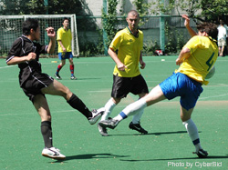

20th June, St Mary's. This game was played in conditions that probably were not ideal to the beautiful game. The result was to
produce an entertaining game that lacked any real creativity from either team.
|  |
Shane defender Andrew 'Sid' Ward, tries to block a cross as the boss, 'General' Dave Gallagher looks on. |
The outcome of the match was settled after only 3 minutes of the first half played. Shane striker Paul James, maiking a good run down the wing
and flighting over a high ball which was brilliantly headed in by his partner up front, James Knight.
After this goal the match turned into more of a basketball match. Turtle being the offense and Shane the defence. Turtle mounted charge after
charge, but Shane manned the barricades and defended for the most part with aplomb.
Turtle shot from just about every angle and distance over 20 yards but to no avail. And so it ended with a 1-0 win for Shane; however there
was a certain amount of luck involved in Shane's victory but a great deal of spirit and endeavour.
Shane will go on to the next game looking for just a point, whereas the unfortunate Turtle FC will have to play the waiting game.
Report by Neil Willis (Shane FC) |